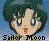

titul epizody
Shin no Power Bakuhatsu! Ami Kokoro no Shirabe
[Skutečná exploze moci! Připravené srdce Ami]
datum vysílání 04. 11. 1995
Souhrn, Joe Retrow, 21. 04. 1996
Ami poslouchá hudbu z počítače. Představuje si sama sebe z
záplavě květových lístků z třešně, Ostatní dívky se n ani dívají.
Artemis podotkne, že pokud chtějí probrat nového nepřítele, musí
být vážní. Ale Chibi Usa a Usagi vezmou Ami desky s papíry na
kterých pracovala a podávají je ostatním.
Rei: "To nevypadá jako učení!"
Makoto: "Vždyť to není to co obvykle u tebe vidím…"
Minako: "Och."
Ami pustila hudební skladbu nahlas pro všechny. Říká, že ji
dostala e-mailem. Když ji poslouchala chtělo se jí napsat k
melodii slova, která by doplnila její pocity z hudby. Usagi
nevěděla co to je e-mail. Tak jí Minako vysvětlila, že to jsou
dopisy posílané přes počítače. Ami pokračuje, že zná pouze
iniciály autora písně, je to "NT" Chibi Usa podotkne, že by
chtěla potkat osobu, která tuto píseň napsala a Ami souhlasí.
Čtvero Amazonek obtěžuje Zirkona – létající oko Zirkonie. Zirkonie jim vynadá, že nemají čas si hrát, že musí hledat zlaté zrcadlo. Zirkon jim předal roztřesenou fotografii (pravděpodobně proto, že byl ještě jejich hrou otřesený). Kvarteto si stěžovalo, že osobu nemohou poznat, ale Zirkonie je vyhnala.
PallaPalla byla schopná extrahovat hudbu z obrazu. Melodii mohli použít pro hledání cíle.
Ami psala e-mail pro "NT": "NT-san, dnes jsem přehrála vaši hudbu přátelům. Všem se to velmi líbilo Nyní píši text k melodii, protože je tak sympatická. Ami"
Ami dostala obraz od svého otce. I když tam nabyl žádný dopis, přesto Ami vycítila teplo z obrazu. Řekla si, že v jejích žilách jistě koluje umělecká otcova krev.
V kavárně ukázala Ami ostatním text, který psala. Ale byla utrápená, protože nikdy nic takového nedělala. Zatímco se Usagi a Rei hádali přišla Diana, že zaslechla hudbu, kterou jim Ami přehrávala.
Dívky šli do sousedního klubu. Našli tam muže u klavíru, jak přehrává stejnou hudbu, kterou už slyšeli u Ami. Ale byla tma také VesVes, která si uvědomila, že našla svůj cíl.
Když NT-san odcházel, získala Ami a dívky jeho pozornost. Po dloubání děvčat se Ami konečně odhodlala říci, že slyšela jeho hudbu a byla jí tak uchvácená, že na ni píše text. "NT" si okamžitě uvědomil, že dívka je Ami, se kterou si dopisoval. Byl překvapený, když ji viděl ve skutečnosti. Představil se jako Nishio Toshiyuki a pozval je všechny na místo kde pracuje.
Nishio si vydělává hraním po kavárnách a společně s kolegyní Kyoko vedou klavírní školu. Ale měl sen Nishio stát se slavným skladatelem. Ami začala pochybovat o svém textu, protože zatímco on tak těžce pracoval na svém snu, ona nikdy nic takového před tím nepsala a nevěděla o tom nic. Tak chtěla před tím, než text odevzdá si ještě něco dalšího vyzkoušet. Ami odešla.
Usagi Ami omluvila za odchod. Řekla že ji přivedou zpátky. Když dívky odešly objevila se i Nishia a Kyoko VesVes.
Dívky zkoušeli přesvědčit Ami, aby ukázala Nishio a Kyoko text, když na něm tak těžce pracovala. Ale Ami si byla jistá, že o tomhle psaní nic neví a že nechce mít mrzutost. Odběhla. Dívky uslyšeli křik Kyoko a šli na pomoc. Diana doběhla Ami. VesVes dostala zrcadlo snů Nishioa, ale zlaté nebylo.
Přiběhli Sailor Senshi a VesVes vyvolala Lemure. Ami přiběhla a volala aby zastavila, ale VesVes hodila svůj míč po Senshi. Tím byly chycené uvnitř PC. Ami chtěla, aby toho VesVes nechala, ale ta dávala Sailor v PC elektrické šoky. Lemure snědl Nishiovo zrcadlo snů.
Ami padala a pak plavala v sloupu modrého světla. Chtěla mít
větší moc, aby mohla ostatní ochránit.
Hlas: "Sailor Mercur."
Ami: "Kdo mě volá?"
Hlas: "Prosím, zastav se a pociť svou skutečnou moc. Dřímá v
tobě."
Ami: "Kdo jsi?"
Dochová postava Sailor Merkur: "Já jsem ty. Jsem tvůj sen.
Procitla jsem když jsem uslyšela poprvé hudbu Nishio-san.
Ami: "Můj sen?"
Sailor Merkur: "Posilují mě obrázky našeho otce, které nám
posílá."
Ami: "To je ono! To je ten posit z čistého srdce!"
Sailor Merkur: "Nyní vzhůru. Naše srdce roste!"
Ami se transformovala na Super Sailor Merkur. Použila "útok vodní
harfou" a dostala všechny ven z počítače. Super Sailor Chibi Moon
a Super Sailor Moon pak porazili Lemure a Ami vrátila Nishiovi
zrcadlo snů.
Nishio a Kyoko čtou text. Nishio řekl že text dokonale zapadá
do melodie.
"Jsem šťastný, když se z mé hudby stala taková pěkná píseň.
Začínám si uvědomovat svůj sen."

Sailor Moon page Hitoshi Doi site explorer(c) Takeuchi Naoko, Koudansha, TV Asahi, Toei Douga